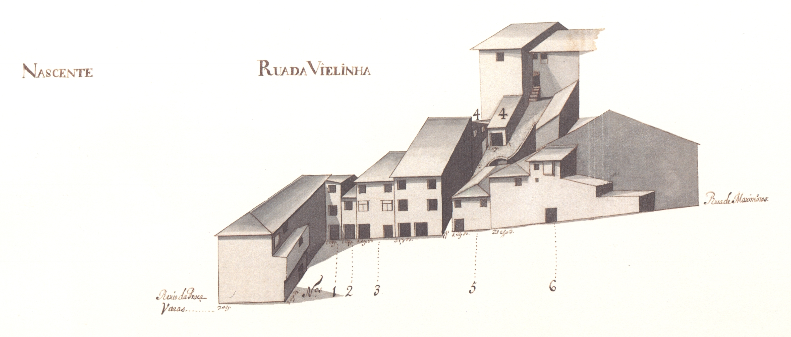

Rua da Vielinha
Imagens antigas:

Imagens atuais:


Descrição:
Pequena e estreitíssima artéria que ligava a Rua de Maximinos com o rexio da Praça. Rua de Maximinos com o rexio da Praça.
Acompanhando a muralha que a faceia parcialmente, tem o prazo do Cabido mais antigo, com data de 1515. 1515.
Com uma configuração esquisita, tinha em 1750 as casas do lado Poente, que escontavam à muralha, de bastante boa qualidade, havendo em 4 delas varandas (de madeira?) e gelosias. Com excepção de uma, todas eram sobradadas. 1750 as casas do lado Poente, que escontavam à muralha, de bastante boa qualidade, havendo em 4 delas varandas (de madeira?) e gelosias. Com excepção de uma, todas eram sobradadas.
Quase insólita é a existência de uma capela, sobre as casas, talvez até sobre a muralha, e sensivelmente a meio da rua, de que não conhecemos nenhuma referência escrita.
Do lado Nascente, as casas são de diferentes pisos, com bastante mau desenho de fachada; as janelas eram tapadas por portadas de madeira. Há uma, porém, com um desenho estranhíssimo e com uma linha de empena extremamente irregular.
A meio deste lado havia um pequeno beco que levava a uma casa.
Penso ser a designação de Vielinha bastante mais correcta que a actual de Violinha, que, aliás, deve ter origem no topónimo antigo.
Das 8 casas do lado Nascente e 7 do Poente, eram prazos do Cabido 6 do Nascente.
Lista das casas
-
Número 1 Enfiteuta Os herdeiros de Filipa Francisca, mulher de Francisco de Freitas Foro 20 reis Descrição Foi pertença do n.º 15 da Rua dos Sapateiros. Rua dos Sapateiros.
-
Número 2 Enfiteuta ??? Foro ??? Descrição Esta casa pertence à obra da Sé, a quem os herdeiros de Domingos de Araújo, caminheiro, e sua mulher, Catarina Gonçalves, lhe pagam de foro 80 reis. Esteve integrada no prazo de uma casa da Rua dos Sapateiros. Domingos de Araújo, caminheiro, e sua mulher, Catarina Gonçalves, lhe pagam de foro 80 reis. Esteve integrada no prazo de uma casa da Rua dos Sapateiros.
-
Número 3 Enfiteuta Manuel da Silva, padeiro Foro 10 reis e 1 galinha Descrição Pertenceu ao n.º 15 da Rua dos Sapateiros. Rua dos Sapateiros.
-
Número 4 Enfiteuta Vid. casa n.º 12, da Rua dos Sapateiros (rua n.º 23). Foro ??? Descrição Encontra-se subemprazada aos herdeiros de Manuel Coelho de Araújo, tratante, e sua mulher, Maria da Costa. Faz parte do prazo da casa n.º 12, da Rua dos Sapateiros, à qual paga de foro 2000 reis. Manuel Coelho de Araújo, tratante, e sua mulher, Maria da Costa. Faz parte do prazo da casa n.º 12, da Rua dos Sapateiros, à qual paga de foro 2000 reis.
Corresponde a duas casas pequenas, situadas na «agiela» da Rua da Vielinha, da parte norte. Rua da Vielinha, da parte norte.
-
Número 5 Enfiteuta ??? Foro ??? Descrição Corresponde ao n.º 13 da Rua dos Sapateiros. Rua dos Sapateiros.
Confronta, do norte, com a agiela da Rua da Vielinha e, do sul, com parte da casa n.º 18 da Rua de Maximinos. Rua da Vielinha e, do sul, com parte da casa n.º 18 da Rua de Maximinos.
-
Número 6 Enfiteuta ??? Foro ??? Descrição Corresponde ao n.º 18 da Rua de Maximinos, para onde tem a frontaria e serventia principais. Rua de Maximinos, para onde tem a frontaria e serventia principais.